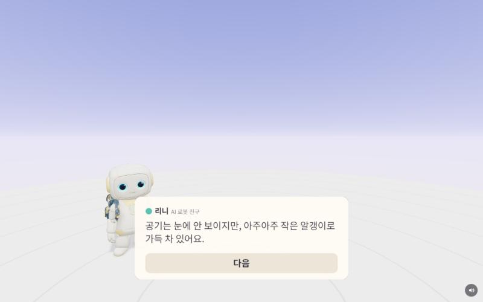
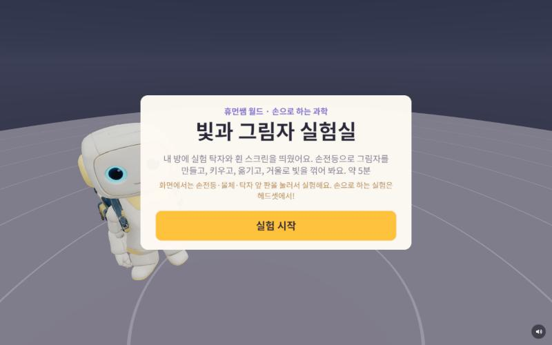
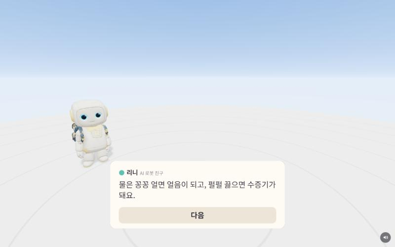
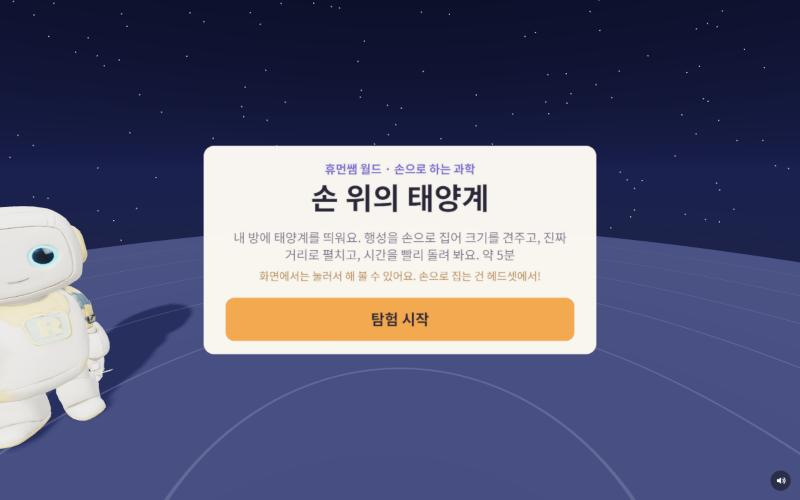
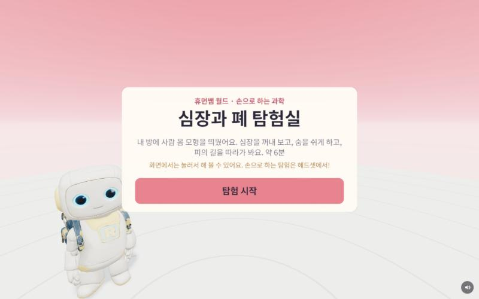

휴먼버스 · 실험실 다섯
눈에 안 보이거나 손에 잡히지 않는 과학을 손으로 만져 보는 실험실 다섯 곳이에요. 로봇 리니가 옆에서 함께해요.
메타 퀘스트 3(손 인식)이나 안드로이드 휴대폰에서는 내 방에 띄워 손으로 실험하고, 휴대폰 · PC 화면에서는 눌러서 해 볼 수 있어요.

내 방 공기를 아주 크게 키워 분자를 손으로 집고, 상자를 눌러 압력을 보고, 데우고, 원자를 붙여 이산화탄소를 만들어 봐요.

내 방에 실험 탁자와 흰 스크린을 띄워요. 손전등으로 그림자를 만들고, 키우고, 옮기고, 거울로 빛을 꺾어 봐요.

물 분자를 크게 키워, 손으로 얼음을 녹이고 물을 끓이고 다시 물방울로 만들어 봐요.

내 방에 태양계를 띄워요. 행성을 손으로 집어 크기를 견주고, 진짜 거리로 펼치고, 시간을 빨리 돌려 봐요.

내 방에 사람 몸 모형을 띄워요. 심장을 꺼내 보고, 숨을 쉬게 하고, 피의 길을 따라가 봐요.